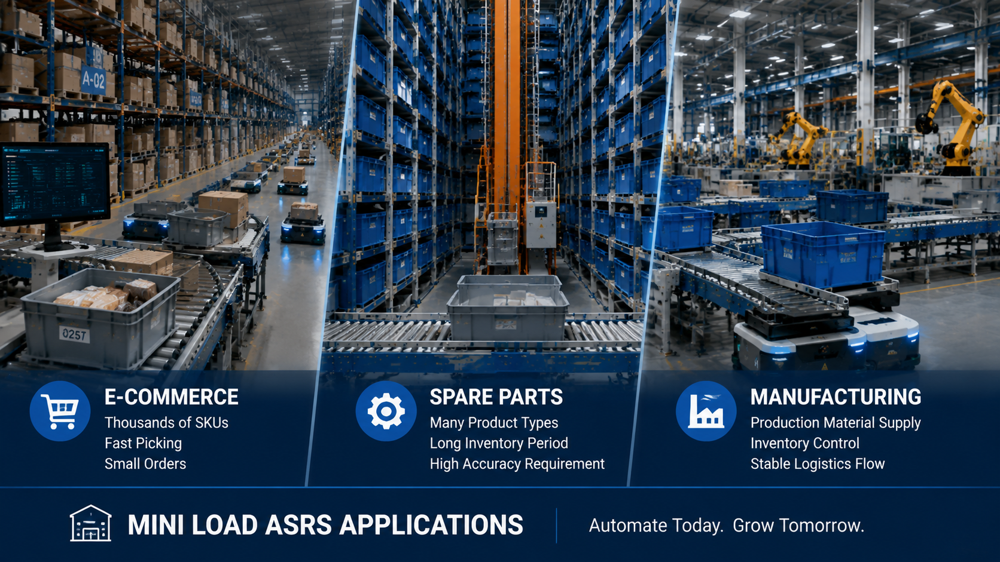

Mini Load ASRS Applications: Best Warehouse Automation Solution for E-commerce and Spare Parts Storage

Summary
Which Industries Are Suitable for Mini Load ASRS Warehouse Automation?
As businesses continue to increase product variety and order complexity, warehouse operations are facing new challenges.
Companies across different industries are managing:
More SKUs
Higher order frequency
Faster delivery requirements
Increasing inventory management complexity
However, not every warehouse requires the same automation solution.
The key question is:
Is Mini Load ASRS suitable for my warehouse operation?
Mini Load ASRS is especially effective for industries that require:
High-density storage
Fast product retrieval
Accurate inventory management
Frequent picking operations
Typical applications include:
E-commerce fulfillment warehouses
Spare parts warehouses
Manufacturing logistics warehouses
Retail distribution centers
This article explains how Mini Load ASRS is applied in different industries and why companies choose automated warehouse solutions to improve operational efficiency.
Technology
- Mini Load ASRS Technology for Different Warehouse Applications
- Mini Load ASRS is an automated storage and retrieval system designed for handling small and medium-sized products stored in bins.
- The system combines:
- Automated storage racks
- High-speed stacker cranes
- Storage bins
- Conveyor systems
- Goods-to-person picking stations
- Warehouse management software
- The core operating process is:
- Product Receiving
- ↓
- Automated Storage
- ↓
- Intelligent Retrieval
- ↓
- Goods-to-Person Picking
- ↓
- Sorting and Shipping
- Compared with traditional manual warehouses
- Mini Load ASRS provides:
- Higher storage density
- Faster retrieval speed
- Better inventory accuracy
- Improved warehouse visibility
Challenge
Why Different Industries Need Warehouse Automation
Different industries have different warehouse requirements.
An e-commerce warehouse focuses on:
Fast order processing
High picking frequency
Large SKU variety
A spare parts warehouse focuses on:
Long-term inventory storage
High accuracy
Product availability
A manufacturing warehouse focuses on:
Production material supply
Inventory control
Stable logistics flow
Although their requirements are different, these industries share a common challenge:
How to manage more products with higher efficiency and accuracy.
Challenge 1: Increasing SKU Numbers
Modern businesses continue to expand product categories.
More SKUs create difficulties in:
Storage organization
Product searching
Inventory management
Manual warehouses become harder to manage as product variety increases.
Challenge 2: Faster Delivery Requirements
Customers expect shorter delivery times.
Warehouses need to process orders faster while maintaining accuracy.
Challenge 3: Limited Warehouse Space
Companies often need more storage capacity without increasing warehouse area.
Traditional storage methods cannot always maximize available space.
Challenge 4: Inventory Accuracy
Incorrect inventory information can create:
Delayed shipments
Production interruptions
Customer dissatisfaction
Digital warehouse automation helps improve inventory control.
Solution
Mini Load ASRS Applications Across Different Industries
Mini Load ASRS is not limited to one specific industry.
Its flexibility makes it suitable for multiple warehouse environments.
Application 1: E-commerce Warehouse Automation
Supporting High-Speed Order Fulfillment
E-commerce warehouses are one of the most common applications for Mini Load ASRS.
Online businesses usually have:
Thousands of SKUs
Small order quantities
Frequent order processing
High picking requirements
Traditional manual picking creates challenges because employees spend significant time searching for products.
Mini Load ASRS provides:
Automated storage
Fast retrieval
Goods-to-person picking
Efficient order processing
Key Benefits for E-commerce Warehouses
Thousands of SKU Management
The system can organize large numbers of products efficiently.
Benefits include:
Better inventory visibility
Faster product access
Improved storage management
Fast Picking Operations
Automated retrieval reduces unnecessary walking distance.
Operators can process more orders within the same working period.
Small Order Processing Capability
E-commerce orders often contain:
Multiple product types
Small quantities
Frequent transactions
Goods-to-person picking is suitable for this operation model.
Application 2: Spare Parts Warehouse Automation
Improving Accuracy and Availability
Spare parts warehouses have different requirements from e-commerce operations.
Typical characteristics include:
Many product categories
Long inventory periods
High accuracy requirements
Critical product availability
Examples include:
Automotive spare parts
Industrial components
Electronic parts
Machinery accessories
Key Benefits for Spare Parts Warehouses
Better Product Organization
Automated storage helps manage thousands of different components.
Improved Inventory Accuracy
Digital warehouse systems provide better tracking of:
Product location
Quantity
Storage history
Faster Spare Parts Retrieval
When maintenance or production requires parts, the system can quickly locate and deliver required items.
This reduces downtime caused by missing inventory.
Application 3: Manufacturing Warehouse Automation
Supporting Production Material Supply
Manufacturing companies require reliable internal logistics.
Warehouses must support:
Raw material storage
Production line supply
Finished product management
Mini Load ASRS can connect warehouse operations with manufacturing processes.
Key Benefits for Manufacturing Warehouses
Production Material Management
The system supports:
Automated material storage
Accurate inventory control
Production preparation
Better Inventory Visibility
Manufacturers can monitor:
Material availability
Storage status
Inventory changes
Improved Factory Logistics
Automated warehouse systems help create smoother connections between:
Warehouse
↓
Production Line
↓
Finished Product Storage
↓
Shipping
Workflow & Layout
Typical Mini Load ASRS Warehouse Workflow
A complete automated warehouse operation includes:
Receiving Process
Incoming products are registered into the warehouse system.
↓
Storage Process
Products are assigned storage locations automatically.
Stacker cranes transport bins into the ASRS system.
↓
Inventory Management
The warehouse software tracks:
Product information
Storage location
Inventory status
↓
Retrieval Process
When an order or production requirement occurs:
The system automatically retrieves required products.
↓
Picking Process
Goods are delivered to operators through goods-to-person picking stations.
↓
Sorting and Shipping
Completed orders move to:
Sorting
Packaging
Shipping
Results & ROI
- Business Benefits of Mini Load ASRS Applications
- Different industries may have different goals
- but the main business benefits are similar.
- Higher Storage Density
- Mini Load ASRS uses vertical space effectively.
- Companies can increase storage capacity within existing facilities.
- Faster Order Processing
- Automated retrieval improves warehouse response speed.
- Better Inventory Accuracy
- Digital control reduces manual errors.
- Reduced Operational Pressure
- Automation reduces repetitive warehouse activities.
- Improved Scalability
- Businesses can expand operations without completely rebuilding warehouse processes.
Equipment List
- Main Components Used in Mini Load ASRS Applications
- A complete solution may include:
- Mini Load ASRS System
- Functions:
- Automated storage
- Automatic retrieval
- High-density inventory management
- Stacker Crane System
- Functions:
- High-speed bin handling
- Accurate positioning
- Continuous operation
- Storage Rack System
- Functions:
- Supporting automated storage locations
- Maximizing warehouse capacity
- Conveyor Transportation System
- Functions:
- Connecting storage and operation areas
- Automated product movement
- Goods-to-Person Picking Station
- Functions:
- Efficient order picking
- Reduced operator movement
- Warehouse Software System
- Including:
- WMS
- WCS
- WES
- Functions:
- Inventory management
- Equipment coordination
- Operation monitoring
Project Overview / Opening
Choosing the Right Warehouse Automation Solution for Your Industry
Every industry has different warehouse challenges.
An e-commerce company may need faster order fulfillment.
A spare parts supplier may require better inventory accuracy.
A manufacturer may need stable production material supply.
However, all companies share the same goal:
Build a warehouse system that is faster, more accurate, and easier to manage.
Mini Load ASRS provides a flexible automation solution for companies that need efficient storage and retrieval operations.
The key is not choosing the most advanced technology.
The key is choosing the right automation solution for your business requirements.
Key Points
- Why Mini Load ASRS Is Suitable for Multiple Industries
- Ideal for High SKU Environments
- Mini Load ASRS performs best when warehouses manage large numbers of products.
- Suitable for Frequent Picking Operations
- Automated retrieval improves efficiency for high-order-frequency warehouses.
- Supports Different Business Models
- Applications include:
- E-commerce
- Retail
- Manufacturing
- Spare parts distribution
- Improves Warehouse Intelligence
- Integration with software systems provides better operational control.
- Creates Long-Term Business Value
- Automation helps companies improve competitiveness through better warehouse performance.
Implementation / Workflow
How to Start a Mini Load ASRS Warehouse Automation Project
A successful project usually follows these steps:
Step 1: Understand Industry Requirements
Analyze:
Product types
SKU quantity
Storage requirements
Order characteristics
Step 2: Evaluate Warehouse Operation
Review:
Current warehouse workflow
Existing problems
Future growth plans
Step 3: Design Automation Solution
Develop:
Warehouse layout
ASRS configuration
Material flow
Software integration
Step 4: System Integration
Connect:
Storage equipment
Conveyors
Picking stations
Warehouse software
Step 5: Testing and Delivery
Complete:
System commissioning
Performance testing
Operation support
Customer Value / Results
Helping Different Industries Build Smarter Warehouses
By implementing Mini Load ASRS, customers can achieve:
E-commerce Companies
Benefits:
Faster order fulfillment
Better SKU management
Higher picking efficiency
Spare Parts Companies
Benefits:
Accurate inventory control
Faster parts retrieval
Reduced storage errors
Manufacturing Companies
Benefits:
Better material supply
Improved production logistics
More stable inventory management
All Customers Benefit From:
Higher warehouse efficiency
Better space utilization
Digital operation capability
Long-term scalability
Conclusion / Next Step
Is Mini Load ASRS Suitable for Your Warehouse?
Mini Load ASRS is becoming an important automation solution for companies that need:
High SKU storage
Fast picking operations
Accurate inventory control
Efficient warehouse management
Whether you operate an e-commerce fulfillment center, spare parts warehouse, or manufacturing logistics facility, the right automation design can significantly improve warehouse performance.
13ASRS works as a China Industrial Automation Project Integration Partner, helping global customers design, source, integrate, and deliver customized warehouse automation projects.
If you are planning a high SKU warehouse automation project, we can help evaluate:
Warehouse requirements
Automation strategy
ASRS system design
Investment requirements
Contact us to start your automated warehouse planning process.
SEO Title
Mini Load ASRS Applications: Best Warehouse Automation Solution for E-commerce and Spare Parts Storage
SEO Description
Which Industries Are Suitable for Mini Load ASRS Warehouse Automation?
As businesses continue to increase product variety and order complexity, warehouse operations are facing new challenges.
Companies across different industries are managing:
More SKUs
Higher order frequency
Faster delivery requirements
Increasing inventory management complexity
However, not every warehouse requires the same automation solution.
The key question is:
Is Mini Load ASRS suitable for my warehouse operation?
Mini Load ASRS is especially effective for industries that require:
High-density storage
Fast product retrieval
Accurate inventory management
Frequent picking operations
Typical applications include:
E-commerce fulfillment warehouses
Spare parts warehouses
Manufacturing logistics warehouses
Retail distribution centers
This article explains how Mini Load ASRS is applied in different industries and why companies choose automated warehouse solutions to improve operational efficiency.
Related Blog
Start with Your Business Challenge
Tell us about your warehouse, factory, or production requirements. We'll help you explore practical automation solutions and relevant project references.